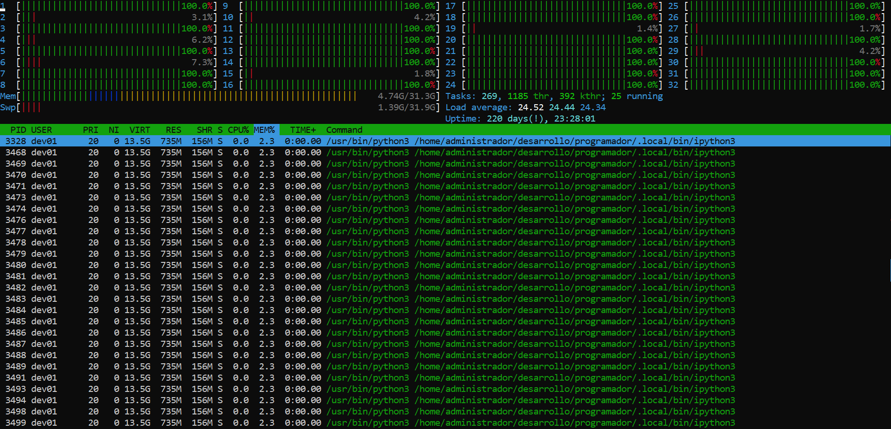
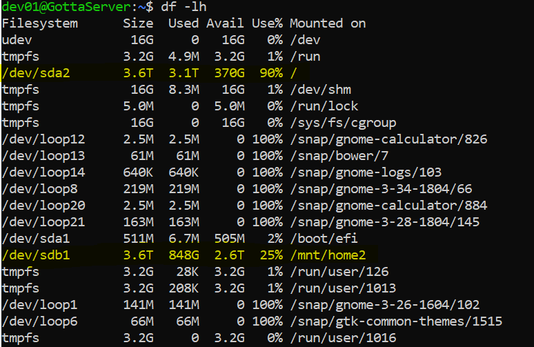

A continuación se listan sus características generales:
Hay varias maneras de conectarse al servidor. Una de ellas es ingresando por medio de líneas de comando desde una terminal. Hay varias opciones para instalar terminales en Windows, aquí se listan algunas:
La primera opción, es desde la terminar con el comando ssh Usuario@IP.
La IP del servidor es 181.143.17.194, y el Usuario se los asignarán dependiendo del proyecto. Una vez se utiliza este comando, se debe ingresar la constraseña y ya se tiene acceso al servidor.
Screen es un comando que sirve para abrir una, o múltiples terminales virtuales, una especie de pestaña en la consola para poder dejar corriendo comandos SIN necesidad de dejar la consola abierta. Un proceso que se deje corriendo en un screen, queda directamente en el servidor, sin ningun puente con tu pc local
Con htop.htop es un visor de procesos y un administrador de procesos de Ubuntu. Con este visor se muestra una lista actualizada con la frecuencia de los procesos que se ejecutan, normalmente ordenados por la cantidad de uso de la CPU, o por RAM. Cuando le damos el comando htop en el servidor, se abre la siguiente instancia:  En la parte superior, donde dice Mem, se muestra la cantidad de memoria RAM que se esta utilizando, y en la parte de abajo se encuentran listados todos los procesos que están corriendo, con el porcentaje de RAM y CPU que están empleando. En este link se explica con mayor detalle los componentes de este visor. Para salir de este visor se presiona f10.
Con el comando df -lh puedo ver todas las particiones del sistema, su espacio disponible y la ubicación.  El servidor tiene dos particiones de almacenamiento principales, y son aquellas señaladas con resaltador amarillo en la imagen. Cada una tiene una capacidad de 3.6T. Tal y como se puede evidenciar, actualmente la partición con más espacio disponible esta ubicada en /mnt/home2. Cuando se necesiten realizar actividades en el servidor que demanden mucho espacio, se recomienda ir revisando con este comando cuánto se esta consumiendo, y así identificar si necesito trasladar mis datos o mi proceso, a la partición con más espacio disponible.
Para analizar el espacio en el servidor se utiliza el comando ncdu situados en la carpeta a partir de la cual quiera que me muestre todos los pesos de los archivos y carpetas en adelante. Una vez se termine el escaneo, se navega entre los resultados con las flechas y se sale con q